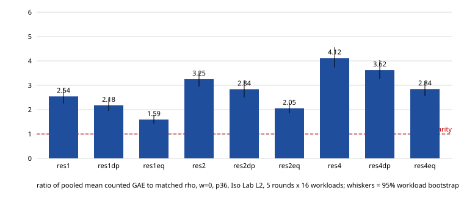

Class: infrastructure verification. Not a speedup. The goal (index calculus near rho parity) is not met: the best arm (res1eq) is still 2.11 × rho at w=0 on this estimator (the w>0 values, 1.92 and 1.06, price only rho's counters because the IC records carry none, so they understate the IC arms' cost and are not a band result; the harness band is authoritative).
identical; L2 gate accepted all 1056 executions (80/80 pairs at L2); A/A res2 vs res2aa wall ratio 0.9995 [0.9981, 1.0017] (within [0.9, 1.1]); quality score 85. SHA256SUMS: 19/19 OK. Source commit be464efac844aa20598a769a085820d2c7101ae9 (+ musl ioctl fix), ecbench sha256 2ce2d100…ed95, image digest sha256:dcb51a3a…83e0bb, Job UID 4c53b06b-5201-47f7-9dc2-116df3697d21.Mean over 16 workloads of the per-workload mean of per-round paired ratios total_gae(arm)/total_gae(rho), plus w × the uncharged counters where the record carries them. Columns: Iso Lab (5 rounds) ± 95% t half-width, then the local L0 (3 rounds) value. This estimator differs slightly from the harness's (3.34 vs 3.249 for res2aa at w=0); the harness comparison is authoritative, this table shows the arm ordering. Note the uncharged counters are in the record only for rho in this estimator, so w>0 columns are approximations; the harness band (above) is authoritative.

| arm | w=0 isolab | L0 | w=0.1 isolab | L0 | w=1 isolab | L0 |
|---|---|---|---|---|---|---|
| res1 | 3.385 ± 0.608 | 3.150 | 3.079 ± 0.553 | 2.864 | 1.695 ± 0.305 | 1.577 |
| res1dp | 2.865 ± 0.628 | 2.751 | 2.606 ± 0.571 | 2.502 | 1.435 ± 0.315 | 1.377 |
| res1eq | 2.114 ± 0.404 | 2.047 | 1.922 ± 0.368 | 1.862 | 1.059 ± 0.203 | 1.025 |
| res2 | 4.277 ± 0.601 | 3.947 | 3.889 ± 0.547 | 3.589 | 2.142 ± 0.302 | 1.976 |
| res2dp | 3.669 ± 0.581 | 3.320 | 3.337 ± 0.528 | 3.019 | 1.837 ± 0.291 | 1.662 |
| res2eq | 2.647 ± 0.435 | 2.560 | 2.407 ± 0.395 | 2.328 | 1.326 ± 0.218 | 1.282 |
| res4 | 5.252 ± 0.703 | 4.887 | 4.776 ± 0.640 | 4.444 | 2.630 ± 0.353 | 2.447 |
| res4dp | 4.624 ± 0.643 | 4.387 | 4.205 ± 0.585 | 3.989 | 2.316 ± 0.322 | 2.196 |
| res4eq | 3.704 ± 0.487 | 3.426 | 3.368 ± 0.443 | 3.115 | 1.855 ± 0.245 | 1.715 |
Evidence: s3 launcher receipt and artifacts of run 41342132360; protocol research/ic_residual_dp_eq_isolab_20261101/PROTOCOL.md (Amendments 1–2).